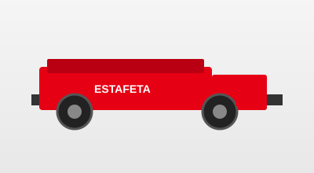

Quiénes somos
Estafeta en México: historia, cobertura y compromiso logístico.
Historia y trayectoria
Estafeta es una empresa mexicana de mensajería y paquetería con décadas de experiencia conectando negocios y personas. Desde sus inicios ha evolucionado hacia soluciones integrales de distribución, apoyando al comercio nacional con procesos estandarizados y una red operativa sólida.
Presencia en México
La compañía mantiene una amplia red de rutas, centros de distribución y puntos de contacto que permiten movilizar envíos entre ciudades, zonas metropolitanas y comunidades con requisitos logísticos diversos. Esta cobertura es pilar para cumplir tiempos de entrega y dar seguimiento puntual a cada movimiento.
Compromiso con la logística
La logística confiable implica planeación de última milla, seguridad de la mercancía y comunicación clara cuando una entrega no puede completarse. El prototipo de este sistema refleja esa necesidad: registrar observaciones de entregas fallidas de forma ordenada para mejorar la experiencia del cliente y la trazabilidad operativa.
